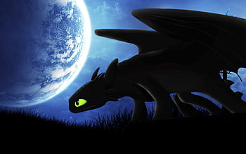

who is Toothless
Toothless is a fictional character, a Night Fury dragon, from the popular film franchise "How to Train Your Dragon." He is the main dragon protagonist in the series and serves as the loyal companion and best friend of the film's protagonist, Hiccup Horrendous Haddock III. In the movies, Toothless is depicted as a sleek and powerful black dragon with large, expressive green eyes. He is known for his retractable teeth, which are a rare trait among dragons, giving him a playful and endearing demeanor. Initially, Toothless is portrayed as a mysterious and feared creature, but as the story progresses, he develops a deep bond with Hiccup, leading to a profound friendship based on trust, understanding, and mutual respect. Throughout the film series, Toothless evolves from a solitary and vulnerable dragon to a confident and protective leader. His character arc emphasizes themes of friendship, courage, and personal growth, making him a beloved and iconic figure in modern animated cinema. The "How to Train Your Dragon" franchise, featuring Toothless as one of its central characters, has captured the hearts of audiences worldwide, inspiring admiration and affection for this enchanting dragon companion.
to know more type this link
characters of the film: